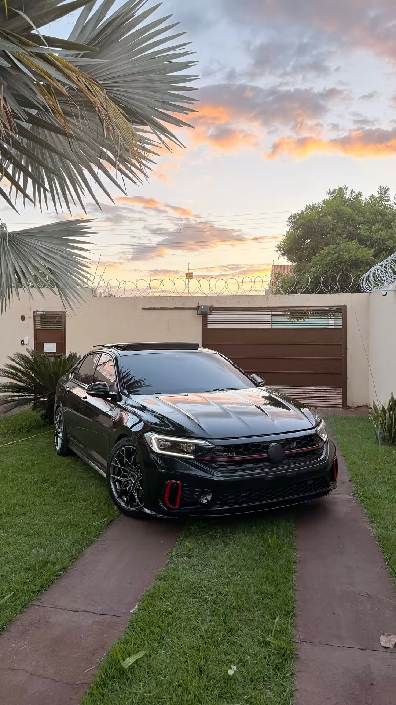

VOLKSWAGENJETTA
Uma história de décadas, evolução, tecnologia e paixão por um dos sedãs mais conhecidos da Volkswagen.
CONHEÇA O JETTA ↓Uma história que atravessa gerações

O que é o Jetta?
O Volkswagen Jetta é uma família de sedãs produzida pela Volkswagen. O modelo nasceu em 1979 e passou por diversas gerações, recebendo novas tecnologias, motores e estilos ao longo dos anos.
Desde seu surgimento, o Jetta combinou a praticidade de um sedã com características esportivas e diferentes níveis de equipamento.
VER GERAÇÕESAs gerações do Jetta
Jetta I
A primeira geração surgiu em 1979. Era derivada do Golf, mas recebeu uma carroceria de três volumes e um porta-malas maior.
Jetta II
A segunda geração chegou em 1984 com mais espaço, conforto e novas opções de motores.
Jetta III
Em alguns mercados recebeu o nome Vento, enquanto o nome Jetta continuou sendo utilizado em outros países.
Jetta IV
Também conhecido como Bora em alguns mercados, tornou-se uma das gerações mais bem-sucedidas da história do modelo.
Jetta V
A quinta geração trouxe um novo desenho e uma evolução significativa em tecnologia e motores.
Jetta VI
A sexta geração apresentou um projeto visual próprio, deixando de ser simplesmente uma derivação visual do Golf.
Jetta VII
A sétima geração passou a utilizar a plataforma modular MQB e trouxe mais tecnologia, espaço e conectividade.
Jetta e tecnologia
Motor
Ao longo das gerações, o Jetta recebeu diversas motorizações, incluindo motores aspirados, turbo e diesel dependendo do mercado.
Conforto
O modelo sempre buscou combinar espaço interno, praticidade e conforto para utilização diária.
Tecnologia
As gerações mais recentes incorporaram sistemas digitais, conectividade e tecnologias de assistência ao motorista.
O estilo Jetta


“Mais do que um sedã, uma história construída ao longo de gerações.”
Volkswagen Jetta — história, evolução e paixão.